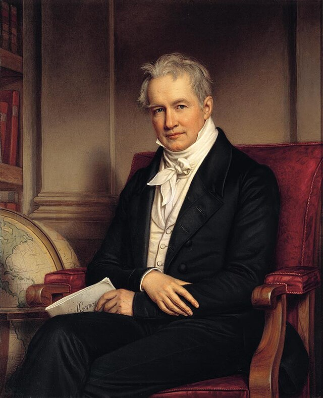

אלכסנדר פון הומבולדט
| מסעות: אמריקה (1799-1804), רוסיה (1829)
אבי האקולוגיה וגדול חוקרי דרום אמריקה | עידן התגליות המדעיות

לחץ על התמונה להגדלה
Portrait of Alexander von Humboldt | Source: Wikimedia Commons | License: Public Domain
מקור ומשמעות השם המלא (אטימולוגיה)
שמו המלא והארוך משקף את המורשת הגרמנית-פרוסית האריסטוקרטית שממנה הגיע. שמו המלא בלידה היה: פרידריך וילהלם היינריך אלכסנדר פון הומבולדט.
שם פרטי: אלכסנדר (Alexander)
השם "אלכסנדר" מקורו בשם היווני הקדום Alexandros (Ἀλέξανδρος).
מקור בלשני ומשמעות: השם מורכב משתי מילים יווניות: Alexein (להגן, להדוף, לשמור) ו-Andros (אדם, גבר). הפירוש המילולי הוא "מגן האדם" או "שומר בני האדם".
סמליות ומשמעות מדעית: אלכסנדר הגדול המקדוני (מוקדון) חרת את השם הזה בהיסטוריה ככובש צבאי אדיר. אלכסנדר פון הומבולדט "כבש" את העולם בצורה אחרת – בעזרת המדע. הוא ראה בטבע מקור כוח שיש לשמור עליו ולהבינו, והזהיר כבר בתחילת המאה ה-19 מפני ההשפעות ההרסניות של האדם על הסביבה (כריתת יערות שהובילה לשינויי אקלים מקומיים באמריקה הדרומית). במובן זה, הוא באמת היה "מגן האדם" באמצעות הידע והמודעות הסביבתית שהנחיל.
שם משפחה ותואר: פון הומבולדט (von Humboldt)
זהו שם משפחה טופונימי (גיאוגרפי) גרמני, בתוספת קידומת אצולה.
הקידומת "פון" (von): בגרמנית, משמעותה "מ-" או "של". קידומת זו מעידה על השתייכות למעמד האצולה (Nobility). משפחת הומבולדט קיבלה את תואר האצולה שלה (Freiherr / ברון) רק דור אחד לפני כן, כהוקרה על שירות צבאי.
הומבולדט (Humboldt): השם מורכב כנראה מהשורש הגרמאני הקדום Humb (שקשור למילה Humbel, המעידה על גבעה או תלולית קטנה) ו-Bold או Wald (יער). הפירוש המשוער הוא "יער על הגבעה".
ההנצחה העולמית: אירוניה אדירה היא ששם שמקורו ב"גבעה קטנה" בגרמניה הפך לאחד השמות הגיאוגרפיים והמדעיים הנפוצים ביותר בכדור הארץ (ובחלל!). על שמו קרויים: זרם הומבולדט מול חופי דרום אמריקה, עשרות מינים של צמחים ובעלי חיים (כמו פינגווין הומבולדט ודיונון הומבולדט), ערים ומחוזות בארה"ב, ואפילו ימה על הירח (Mare Humboldtianum).
ילדות ורקע מוקדם: בין פרוסיה לנאורות הצרפתית
אלכסנדר פון הומבולדט נולד בברלין, שהייתה אז בירת ממלכת פרוסיה. משפחתו הייתה אמידה מאוד ומקורבת לחצר המלך הפרוסי פרידריך הגדול.
חינוך נוקשה תחת הנאורות
אביו, אלכסנדר גיאורג פון הומבולדט, היה קצין צבא שמונה לשר בחצר המלכות, אך מת כשאלכסנדר היה בן 9. אמו, מריה אליזבת קולומב, הייתה בורגנית עשירה, קרה ונוקשה. היא ייעדה את אלכסנדר ואת אחיו הבכור, וילהלם (שהפך לימים לבלשן ופילוסוף דגול ושר החינוך של פרוסיה), לקריירה בשירות המדינה. האחים זכו לחינוך פרטי ממיטב המוחות של תקופת הנאורות בברלין (Aufklärung)."הילד עם החרקים" והקריירה כגאולוג
בעוד אחיו וילהלם הצטיין בשפות וספרות, אלכסנדר היה ילד חולני מעט שהעדיף לשוטט ביערות. הוא אסף חרקים, אבנים וצמחים, וזכה לכינוי המשפחתי המזלזל מעט: "רוקח קטן" (Little Apothecary).למרות חלומו לגלות ארצות, אמו הכריחה אותו ללמוד מקצוע מעשי. הוא הוסמך כמפקח מכרות. בגיל 22 בלבד הוא פרסם מחקרים גאולוגיים מבריקים והמציא מערכות נשימה לחילוץ כורים (ואף ניסה אותן על עצמו במכרה עד שכמעט מת מחנק). רק לאחר שאמו מתה ב-1796, הוא ירש הון עצום שאפשר לו להגשים את חלומו האמיתי: לחקור את העולם במימונו הפרטי.
אידאולוגיה ומניעים: "הטבע הוא רשת חיה" (Naturgemälde)
הומבולדט שבר את המסורת ההיסטורית של מגלי הארצות שקדמו לו באמריקה (הקונקיסטאדורים):
מסע החקר לאמריקות (1799-1804): מדידת היבשת
ביוני 1799, יצא הומבולדט יחד עם הבוטנאי הצרפתי איימה בונפלאן (Aimé Bonpland) למסע מחקר בן חמש שנים בדרום אמריקה. הוא השיג אישור נדיר ממלך ספרד לחקור את המושבות הסגורות של האימפריה הספרדית, ולקח איתו 42 מכשירי מדידה מתקדמים במימונו האישי.
1. גילוי נהר הקסיקיארה (Casiquiare) באגן האמזונס (1800)
ההישג הגיאוגרפי הראשון הגדול שלו התרחש בג'ונגלים של ונצואלה. במשך עשרות שנים היו שמועות שיש תעלה טבעית שמחברת בין שתי מערכות הנהרות האדירות של היבשת: האורינוקו (Orinoco) ויובלי האמזונס. הומבולדט ובונפלאן שטו במשך 75 ימים, מרחק של 2,250 קילומטרים בסירות קאנו חשופות. הם חלו במלריה, נאכלו על ידי חרקים ונתקלו בתנינים ויגוארים. בסופו של דבר, הם הצליחו למפות במדויק את תעלת הקסיקיארה והוכיחו שהיא אכן מקשרת בין שתי מערכות הנהר העצומות – תופעה הידרולוגית ייחודית בעולם.
2. הטיפוס על הר צ'ימבורסו (Chimborazo) באקוודור (1802)
ביוני 1802 ניסה הומבולדט להעפיל לפסגת הר הגעש צ'ימבורסו בהרי האנדים שבאקוודור (שנחשב אז להר הגבוה בעולם).
החוויה הפיזית הקיצונית: כשהם לבושים במעילי פשתן ונועלים מגפיים רגילים, ללא ציוד חמצן, הם טיפסו על צוקים קפואים. בגובה של כ-5,800 מטרים הם החלו לסבול מ"מחלת גבהים": סחרחורות, בחילות ודימום מהעיניים ומהשפתיים בגלל חוסר החמצן והלחץ הנמוך.
התגלית המדעית: בגלל תהום עמוקה הם נעצרו בגובה של 5,917 מטרים (שיא טיפוס עולמי שנשבר רק עשרות שנים לאחר מכן). בנקודה זו, הומבולדט הבין את הקשר הישיר בין האקלים לבוטניקה. הוא שרטט את ה-"נאטורגמאלדה" (Naturgemälde) המפורסם שלו – איור של הר המראה כיצד אזורי הצמחייה משתנים ככל שעולים בגובה ושהטמפרטורה יורדת. הוא הראה שהצמחייה בפסגת הר באקוודור דומה לצמחייה בהרי האלפים באירופה, ובכך ייסד את תחום הביוגיאוגרפיה.
3. חקר הזרם האוקייני והמגנטיות של כדור הארץ (1802-1803)
ההידרולוגיה של הים ("זרם הומבולדט"): בזמן ששהה בחופי פרו, הומבולדט מדד את הטמפרטורה של מי האוקיינוס השקט והבחין בזרם מים קר מאוד הזורם צפונה מאנטארקטיקה לאורך חוף אמריקה הדרומית. הוא מיפה את מהירותו וטמפרטורת המים, והוכיח כיצד הזרם הזה מקרר את האקלים באזור ומונע גשמים (מה שיוצר את מדבר אטקמה). זרם זה קרוי על שמו עד היום.
הקו המשווה המגנטי: הומבולדט גילה במהלך מסעו שהעוצמה המגנטית של כדור הארץ פוחתת ככל שמתקרבים לקו המשווה, תגלית שהניחה את היסודות לגיאופיזיקה המודרנית.
התגליות הביולוגיות: זואולוגיה ובוטניקה של העולם החדש
במהלך חמש שנות מסעם, הומבולדט ובונפלאן אספו כ-60,000 דגימות של צמחים ובעלי חיים, מתוכן כ-6,000 מינים שהיו חדשים לחלוטין למדע המערבי. בעוד חיות גדולות כמו היגואר והקפיבארה כבר היו מוכרות לאירופאים זה מאות שנים (וקיבלו את שמן המדעי מקארולוס ליניאוס), הומבולדט התמקד בגילוי מינים אקזוטיים, בהבנת תפקודם האקולוגי וברישום מדעי של צמחי מרפא.
תגליות זואולוגיות (בעלי חיים)
-
הצלופח החשמלי (Electrophorus electricus):
זמן ומקום: מרץ 1800, ביצות ונהרות אגן האורינוקו, ונצואלה.
הגילוי: הילידים סיפרו לו על "דגים שיורים ברקים". כדי לתפוס אותם מבלי להתחשמל, הומבולדט השתמש בטקטיקה ילידית מדהימה (ואכזרית): הוא הריץ סוסי פרא לתוך הביצה. הצלופחים (באורך של עד 2 מטרים) תקפו את הסוסים במכות חשמל של מאות וולט עד שהתרוקנו מאנרגיה. רק אז נכנסו למים ותפסו אותם לניסויים על "חשמל ביולוגי". -
ציפור השמן / גוּאָשָרוֹ (Steatornis caripensis):
זמן ומקום: ספטמבר 1799, מערת קאריפה, ונצואלה.
הגילוי: עוף לילה יוצא דופן ועיוור כמעט לחלוטין שחי במערות אפלות. הומבולדט גילה שהעוף מנווט בחשכה באמצעות אקולוקציה (הדהוד קול). זהו העוף היחיד בעולם הניזון מפירות ומנווט בעזרת סונאר טבעי. - קופי שאגן (Howler Monkeys): במהלך השיט באמזונס, הומבולדט תיעד אנטומית ואקולוגית את המבנה הייחודי של הלשון והגרון המאפשר להם להפיק שאגות אדירות.
תגליות בוטניות (צמחים)
-
עץ הקינכונה (Cinchona) - מקור תרופת הכינין:
זמן ומקום: הרי האנדים באקוודור, 1802.
הומבולדט היה המדען הראשון שתיעד שיטתית את העץ שקליפתו מרפאה מלריה, ואת התנאים האקולוגיים הספציפיים בגובה האנדים שבהם הוא גדל. הוא הזהיר כי כריתת-יתר תביא להכחדתו. -
"עץ הפרה" (Brosimum utile):
זמן ומקום: ונצואלה, תחילת 1800.
הומבולדט נדהם לגלות עץ שמקליפתו הפצועה ניגר מוהל לבן, סמיך ומתוק שנראה ומרגיש ממש כמו חלב פרה. הוא תיעד כיצד הילידים שותים את המוהל כתחליף תזונתי, והביא דגימות מה"חלב הצמחי" לאירופה. - עץ אגוז הברזיל (Brazil Nut): תיאור מדעי ראשון ומפורט של העץ העצום, פירותיו הכבדים, ומיקומו הקריטי בתוך המערכת האקולוגית של יער הגשם.
מסע החקר לרוסיה ולסיביר (1829)
בגיל 60 (!), ולאחר שאיבד את כל הונו על הדפסת ספריו היוקרתיים (34 כרכים על אמריקה), הוא הוזמן על ידי צאר רוסיה (ניקולאי הראשון) למסע מחקר אל הרי אורל וסיביר, בתקווה למצוא עתודות של זהב ופלטינה. הוא גמא במסע זה כ-15,000 קילומטרים תוך כחצי שנה.
הגילוי האקלימי: במסע זה הוא אסף נתוני טמפרטורה עצומים ברחבי האימפריה הרוסית. בהשוואה לנתונים שאסף באמריקה הדרומית ובאירופה, הוא המציא את ה-איזותרמות (Isotherms) – אותם קווים עקומים המופיעים במפות מזג האוויר של ימינו, המחברים בין מקומות בעלי טמפרטורה ממוצעת שווה ברחבי העולם. הוא גילה שקרובי רוחב אינם מכתיבים לבדם את האקלים (למשל, מוסקבה ופלימות' נמצאות על אותו קו רוחב, אך יש להן אקלים שונה לחלוטין בשל הריחוק מהאוקיינוס).
מקורות וביבליוגרפיה (אימות מחקר אקדמי)
- "The Invention of Nature: Alexander von Humboldt's New World" (Andrea Wulf, 2015): הביוגרפיה המודרנית עטורת הפרסים המנתחת את רעיון ה"רשת של הטבע" ואת המצאת האקולוגיה על ידו, כולל פירוט נרחב על גילוי הצלופחים החשמליים.
- "Cosmos: A Sketch of the Physical Description of the Universe" (אלכסנדר פון הומבולדט, 1845): יצירת המופת של הומבולדט שבה הוא מתאר את כל הידע המדעי של התקופה תחת הקונספט של עולם מחובר והרמוני.
- "Plantae Equinoctiales" (הומבולדט ובונפלאן, 1808-1809): הכרכים הבוטניים המרכזיים שכתבו על המסע, המוקדשים לתיאור וסיווג של אלפי מיני הצמחים החדשים, בהם "עץ הפרה" ועץ הקינכונה.
- "Personal Narrative of Travels to the Equinoctial Regions of the New Continent" (הומבולדט ובונפלאן, 1814): היומנים המקוריים שבהם מתואר הטיפוס המסוכן על הר צ'ימבורסו, המסע בתעלת קסיקיארה וגילוי ציפור הגואשרו.